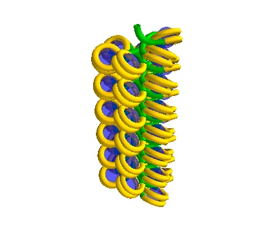
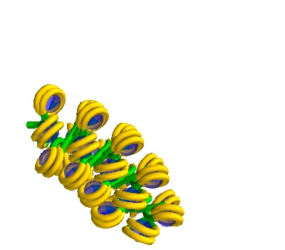
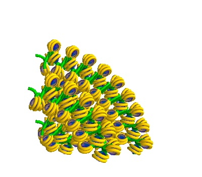

Generating Geometries for Geant4
This notebook contains code blocks used to generate sample geometries used in Geant4 simulations.
[ ]:
import sys
from pathlib import Path
try:
from fractaldna.dna_models import dnachain
except (ImportError, ModuleNotFoundError):
sys.path.append(str(Path.cwd().parent.parent.parent))
from fractaldna.dna_models import dnachain
import numpy as np
from mayavi import mlab
mlab.options.offscreen = True
Single DNA Segments
Straight and Turned Segments for a 50nm box.
[ ]:
%%capture
bp_separation = dnachain.BP_SEPARATION # 3.32Å
side_length_nm = 50 # nm
num_basepairs_straight = int(side_length_nm / (0.1 * bp_separation))
num_basepairs_turned = int((side_length_nm * np.pi / 4.0) / (0.1 * bp_separation))
chain_straight = dnachain.DNAChain(
"".join(np.random.choice(["G", "A", "T", "C"], num_basepairs_straight))
)
chain_turned = dnachain.TurnedDNAChain(
"".join(np.random.choice(["G", "A", "T", "C"], num_basepairs_turned))
)
chain_turned_twisted = dnachain.TurnedTwistedDNAChain(
"".join(np.random.choice(["G", "A", "T", "C"], num_basepairs_turned))
)
chain_straight.to_frame().to_csv("results/50nm_straight.csv", sep=" ", index=False)
chain_turned.to_frame().to_csv("results/50nm_turn.csv", sep=" ", index=False)
chain_turned_twisted.to_frame().to_csv(
"results/50nm_turn_twist.csv", sep=" ", index=False
)
chain_straight.to_plot().savefig("results/50nm_straight.png", sep=" ", index=False)
chain_turned.to_plot().savefig("results/50nm_turn.png", sep=" ", index=False)
chain_turned_twisted.to_plot().savefig(
"results/50nm_turn_twist.png", sep=" ", index=False
)
Multi Strand straight and turned segments
[ ]:
%%capture
bp_separation = dnachain.BP_SEPARATION # 3.32Å
side_length_nm = 50 # nm
num_basepairs_straight = int(side_length_nm / (0.1 * bp_separation))
num_basepairs_turned = int((side_length_nm * np.pi / 4.0) / (0.1 * bp_separation))
strand_separation = 100 # angstroms
chain4_straight = dnachain.FourStrandDNAChain(
"".join(np.random.choice(["G", "A", "T", "C"], num_basepairs_straight)),
strand_separation,
)
chain4_turned = dnachain.FourStrandTurnedDNAChain(
"".join(np.random.choice(["G", "A", "T", "C"], num_basepairs_turned)),
strand_separation,
)
chain4_turned_twisted = dnachain.FourStrandTurnedDNAChain(
"".join(np.random.choice(["G", "A", "T", "C"], num_basepairs_turned)),
strand_separation,
twist=True,
)
chain4_straight.to_frame().to_csv("results/50nm_4_straight.csv", sep=" ", index=False)
chain4_turned.to_frame().to_csv("results/50nm_4_turn.csv", sep=" ", index=False)
chain4_turned_twisted.to_frame().to_csv(
"results/50nm_4_turn_twist.csv", sep=" ", index=False
)
chain4_straight.to_plot().savefig("results/50nm_4_straight.png")
chain4_turned.to_plot().savefig("results/50nm_4_turn.png")
chain4_turned_twisted.to_plot().savefig("results/50nm_4_turn_twist.png")
[ ]:
%%capture
bp_separation = dnachain.BP_SEPARATION # 3.32Å
side_length_nm = 50 # nm
num_basepairs_straight = int(side_length_nm / (0.1 * bp_separation))
num_basepairs_turned = int((side_length_nm * np.pi / 4.0) / (0.1 * bp_separation))
strand_separation_1 = 100 # angstroms
strand_separation_2 = 250 # angstroms
chain8_straight = dnachain.EightStrandDNAChain(
"".join(np.random.choice(["G", "A", "T", "C"], num_basepairs_straight)),
strand_separation_1,
strand_separation_2,
turn=False,
twist=False,
)
chain8_turned = dnachain.EightStrandDNAChain(
"".join(np.random.choice(["G", "A", "T", "C"], num_basepairs_turned)),
strand_separation_1,
strand_separation_2,
turn=True,
twist=False,
)
chain8_turned_twisted = dnachain.EightStrandDNAChain(
"".join(np.random.choice(["G", "A", "T", "C"], num_basepairs_turned)),
strand_separation_1,
strand_separation_2,
turn=True,
twist=True,
)
chain8_straight.to_frame().to_csv(
"results/50nm_8_straight.csv",
sep=" ",
index=False,
)
chain8_turned.to_frame().to_csv("results/50nm_8_turn.csv", sep=" ", index=False)
chain8_turned_twisted.to_frame().to_csv(
"results/50nm_8_turn_twist.csv", sep=" ", index=False
)
chain8_straight.to_plot().savefig("results/50nm_8_straight.png")
chain8_turned.to_plot().savefig("results/50nm_8_turn.png")
chain8_turned_twisted.to_plot().savefig("results/50nm_8_turn_twist.png")
Making Solenoidal DNA
Single Solenoids
[ ]:
side_length = 750 # angstrom
radius_solenoid = 100 # angstrom
nhistones = 38 # histones
solenoid_straight = dnachain.Solenoid(
voxelheight=side_length, radius=radius_solenoid, nhistones=nhistones
)
solenoid_turned = dnachain.TurnedSolenoid(
voxelheight=side_length, radius=radius_solenoid, nhistones=nhistones
)
solenoid_turned_twisted = dnachain.TurnedSolenoid(
voxelheight=side_length, radius=radius_solenoid, nhistones=nhistones, twist=True
)
# centre around (x,y,z)=(0,0,0)
solenoid_straight.translate([0, 0, -side_length / 2.0])
solenoid_turned.translate([0, 0, -side_length / 2.0])
solenoid_turned_twisted.translate([0, 0, -side_length / 2.0])
solenoid_straight.to_frame().to_csv(
"results/solenoid_straight.csv", sep=" ", index=False
)
solenoid_turned.to_frame().to_csv("results/solenoid_turned.csv", sep=" ", index=False)
solenoid_turned_twisted.to_frame().to_csv(
"results/solenoid_turned_twisted.csv", sep=" ", index=False
)
plot = solenoid_straight.to_line_plot()
plot.scene.save_jpg("results/solenoid_straight.jpg")
plot = solenoid_turned.to_line_plot()
distance = 1500
mlab.view(azimuth=180, elevation=0, distance=distance, focalpoint=[0, 0, 0])
mlab.move(up=-distance, forward=distance)
mlab.pitch(90)
plot.scene.save_jpg("results/solenoid_turned.jpg")
plot = solenoid_turned_twisted.to_line_plot()
mlab.view(azimuth=180, elevation=0, distance=distance, focalpoint=[0, 0, 0])
mlab.move(up=-distance, forward=distance)
mlab.pitch(90)
plot.scene.save_jpg("results/solenoid_turned_twisted.jpg")
  
Generating multiple solenoids in a Volume
[ ]:
side_length = 1000 # angstrom
radius_solenoid = 100 # angstrom
nhistones = 51 # histones
separation = 250 # angstroms
solenoid4_straight = dnachain.MultiSolenoidVolume(
voxelheight=side_length,
separation=separation,
radius=radius_solenoid,
nhistones=nhistones,
chains=[1, 2, 3, 4],
turn=False,
twist=False,
)
solenoid4_turned = dnachain.MultiSolenoidVolume(
voxelheight=side_length,
separation=separation,
radius=radius_solenoid,
nhistones=nhistones,
chains=[1, 2, 3, 4],
turn=True,
twist=False,
)
solenoid4_turned_twisted = dnachain.MultiSolenoidVolume(
voxelheight=side_length,
separation=separation,
radius=radius_solenoid,
nhistones=nhistones,
chains=[1, 2, 3, 4],
turn=True,
twist=True,
)
# centre around (x,y,z)=(0,0,0)
solenoid4_straight.translate([0, 0, -side_length / 2.0])
solenoid4_turned.translate([0, 0, -side_length / 2.0])
solenoid4_turned_twisted.translate([0, 0, -side_length / 2.0])
solenoid4_straight.to_frame().to_csv(
"results/solenoid4_straight.csv", sep=" ", index=False
)
solenoid4_turned.to_frame().to_csv("results/solenoid4_turned.csv", sep=" ", index=False)
solenoid4_turned_twisted.to_frame().to_csv(
"results/solenoid4_turned_twisted.csv", sep=" ", index=False
)
plot = solenoid4_straight.to_line_plot()
plot.scene.save_jpg("results/solenoid4_straight.jpg")
plot = solenoid4_turned.to_line_plot()
distance = 2500
mlab.view(azimuth=180, elevation=0, distance=distance, focalpoint=[0, 0, 0])
mlab.move(up=-distance, forward=distance)
mlab.pitch(90)
plot.scene.save_jpg("results/solenoid4_turned.jpg")
plot = solenoid4_turned_twisted.to_line_plot()
mlab.view(azimuth=180, elevation=0, distance=distance, focalpoint=[0, 0, 0])
mlab.move(up=-distance, forward=distance)
mlab.pitch(90)
plot.scene.save_jpg("results/solenoid4_turned_twisted.jpg")
